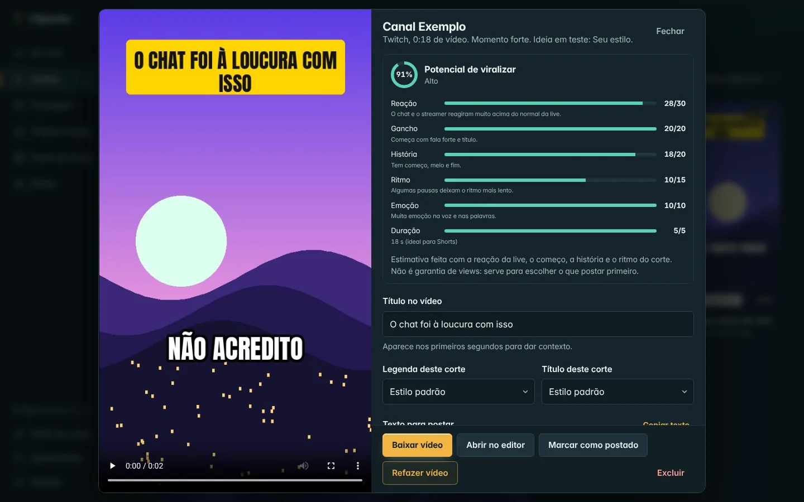
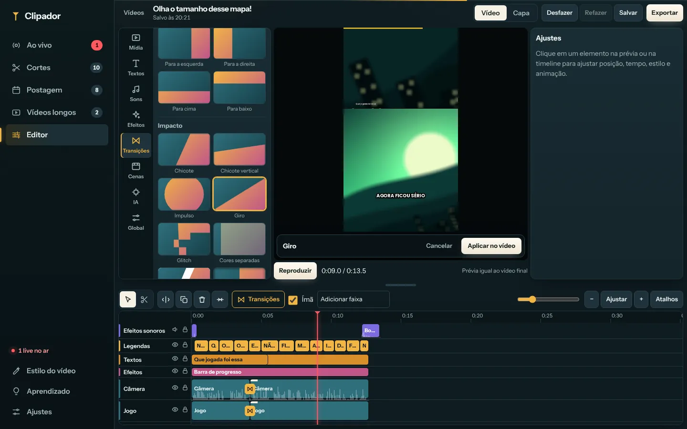
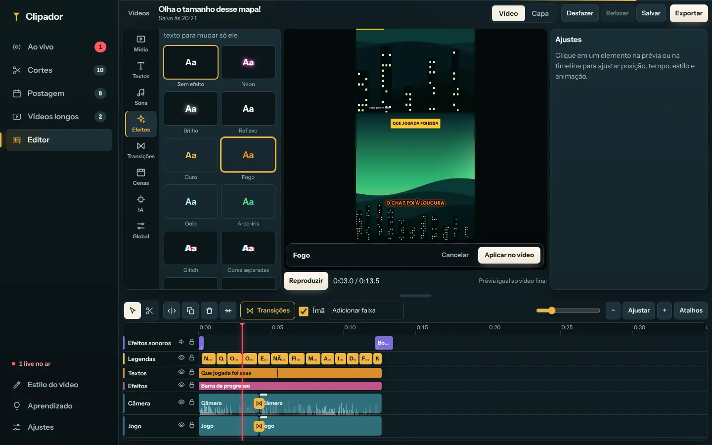
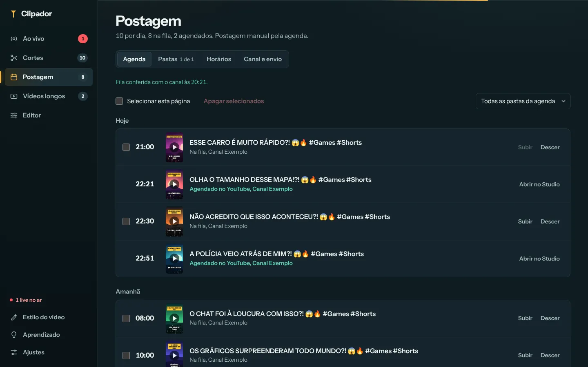

Acompanhe a live em tempo real
Veja a força de cada momento, o chat e os cortes saindo enquanto a transmissão continua.

O Clipador acompanha a transmissão, encontra os melhores momentos e entrega Shorts e vídeos longos editados.

28transições
14efeitos de texto
22modelos de legenda
108efeitos sonoros
44fontes
Veja a força de cada momento, o chat e os cortes saindo enquanto a transmissão continua.
Cada corte ganha uma nota de potencial de viralizar, com o motivo: a reação da live, o gancho dos primeiros segundos, se a história está completa e o ritmo. As dicas mostram o que mudar antes de postar.

O Clipador testa jeitos diferentes de editar, como a câmera dinâmica que mostra o jogo na ação e o rosto do streamer na reação. O que você posta e o que dá mais visualizações passa a aparecer mais.

Timeline com várias faixas, 28 transições, efeitos de voz, legenda que segue quem fala e prévia no seu vídeo antes de aplicar.

Neon, fogo, ouro, glitch e outros efeitos em uma legenda ou em todas de uma vez.

Organize os Shorts por pastas e horários. Vídeos longos só saem depois da sua revisão.

Legendas mais certeiras em português, com o modelo large-v3-turbo, nomes das suas lives e correções que o Clipador aprende.
20 modelos de legenda do editor no Estilo do vídeo e escolha da fonte da legenda e do título.
Ideias de edição em teste: o Clipador compara jeitos de editar e usa mais o que você posta e o que dá mais visualizações.
Câmera dinâmica, que mostra o jogo na ação e o rosto do streamer de perto na reação, legenda React e o seu @ no vídeo e no final.
Potencial de viralizar em cada corte, com o motivo da nota e dicas do que mudar.
Cortes com começo, meio e fim, posts de frase para o feed e os stories, e câmera que segue quem está falando.
Editor renovado, com miniaturas na timeline, efeitos de voz, filtros, exportação para outros editores e tradução de legendas.
O download está liberado para quem recebeu o convite por e-mail. Com a conta do GitHub convidada aberta neste navegador, o instalador começa a baixar na hora.
Baixar a versão 1.12.0Se aparecer "Página não encontrada", sua conta ainda não tem acesso.